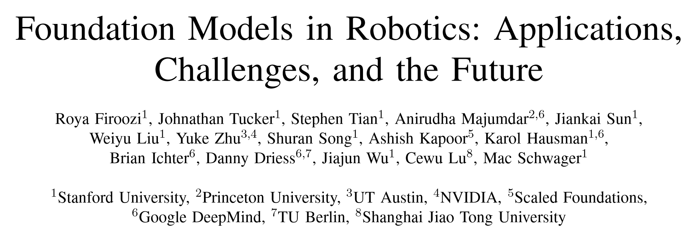
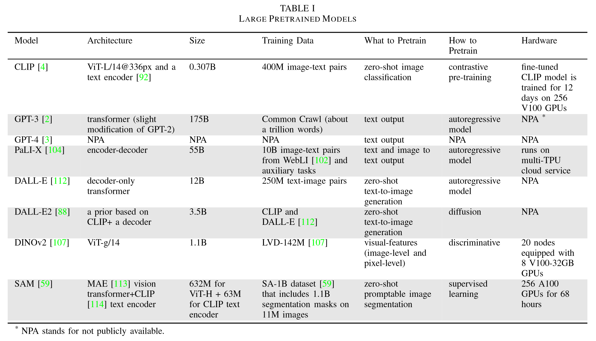

这是一篇关于具身智能中基础模型的综述。论文来自这里.

# 引言
# 基础模型的背景
# 专业术语和数学基础
- Tokenization(词元化)：就是将句子划分为小的 token. 最常见的也即 GPT 家族使用的 tokenization 方法是字节对编码 (byte-pair encoding, BPE).
- Generative Models (生成模型)：基于数据的条件分布限制生成新样本的模型。
- Discriminative Models (判别模型)：用于回归或分类问题的模型。
- Transformer 架构：嗯。
- Autoregressive Models (自回归模型)：模型的输出取决于先前的输出，例如 ARMA RNN LSTM 等等。
- Masked Auto-Encoding (掩码自编码)：最早来自 CV 领域，通过遮蔽图片中的一部分像素进行预测使模型学习图像的特征表示。在 LLM 中，BERT 也对语言采用了类似的操作（完形填空）。
- Contrastive Learning (对比学习)：一种用来学习不同模态的联合嵌入空间的方式。公式如下：
- Diffusion Models (扩散模型)：简单说了说正向和反向过程。
# 大语言模型的例子
讲了讲众所周知的常识，提了一嘴 GLUE (General Language Understanding Evaluation) 和 RLHF (Reinforcement Learning with Human Feedback).
# Vision Transformer (ViT)
ViT 使用 Transformer 的首要工作是将图片转化为一个 token 序列，实现的具体方法是将图片分割成一个个 patch (小块)。这样就实现了序列化。ViT 的别的内容与通常的 Transformer 差别不大。
训练 ViT 的一种方式是 DINO, 这是一种自监督学习方法，是无标签知识蒸馏的一种形式。知识蒸馏 (knowledge distillation) 通过让架构与大模型一致的小模型模仿大模型的行为以实现知识蒸馏，优化目标是交叉熵最小。
DINOv2 提供了一系列预训练 ViT, 其在 20 节点的 8 卡 v100-32GB 上进行训练。
# 多模态 VLM
多模态 VLM (Multidmodal Vision-Lagnuage Models) 就是指其输入包括多种模态。 VLM 是同时包含文本和图片的多模态模型。
VLM 中最常用的模型是 CLIP (Contrastive Language-Image Pre-training). 从名字中就可以看出，CLIP 是通过图片和文字两种模态进行对比学习训练出来的。需要注意的是，CLIP 采用的数据集是网络爬取得到的，因此质量比较差，只能进行判别任务，不能进行生成任务。
BLIP (Bootstrapping Language-Image Pre-training) 针对互联网数据噪声较多的问题，通过 bootstraping the captions （似乎翻译成 “自举标注”）方法实现了数据增强。
CLIP2 和 FILIP 都是性能上的提升。
FLIP 提出了一种更加简单和高效的方法来训练 CLIP, 即在训练中随机遮蔽并删除图片的重要部分。
# 具身 MLM
具身语言模型是将传感器数据和驱动模式 (actuation modalities, 包括机械臂的运动、移动和导航、抓取和释放、工具使用等等) 纳入训练数据的基础模型。
PaLM-E 是基于大语言模型 PaLM 和 ViT 模型训练的，其训练数据不仅包括互联网的视觉 - 语言信息，还包括机器人数据。在实际的使用中，对于给定的多模态输入，PaLM-E 作为高等级控制策略，通过语言对底层决策进行控制（感觉这样精度不高的样子）。
# 视觉生成模型
DALL-E 和 DALL-E2 可以提供零样本文生图功能。

# 机器人学
# 用于决策和控制的策略学习
策略学习主要包括两类：
语言控制的模仿学习 (language-conditioned imitation learning)
语言辅助的强化学习 (language-assisted reinforcement laerning)
# 语言控制的模仿学习
在语言控制的模仿学习中，一个策略可以表示为 , 其中 是动作， 是环境状态， 是语言指令。损失函数基于最大似然构建：
其中 是带有语言注释的演示数据集，可以包括轨迹数据、图片序列、RGB-D 体素数据等。每一个 是一项演示数据。